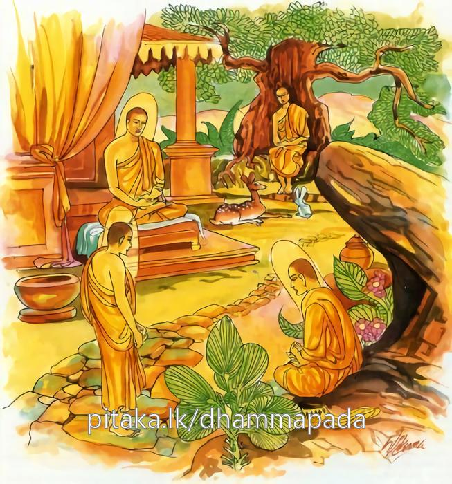

7-9 නවවන ඛදිරවනිය රේවතතෙරුන්ගේ වස්තුවයි.
මෙම කතාව සද්ධර්ම සාගරයෙන් ද කියවන්න.
ගාමෙ වා යදි වා රඤ්ඤෙ නින්නෙ වා යදි වා ථලෙ
යත්ථාරහන්තො විහරන්ති තං භූමිං රාමණෙය්යකං.
ගමෙක අරණෙක වළ තැනෙක නොහොත් ගොඩ තැනෙක හෝ යම් කවර තැනෙක රහත්හු වෙසෙත් ද, ඒ බිම රමණීය යි (සිත් කලු යි).

ගාමෙ වා ආදි මේ ධර්මදේශනාව බුදුරදුන් දෙව්රම වැඩවසන කාලයෙහි ඛදිරවනිය රේවතහිමියන් අරභයා දේශනා කරන ලදි.
ආයුෂ්මත් සැරියුත්තෙරණුවෝ අසූහත් කෝටියක ධනය හැරදමා පැවිදිව, චාලා උපචාලා සිසූපචාලා යන නැගණියන් තිදෙනාද, මන්ද්ර, උපසේන යන සොහොයුරන් දෙදෙනාද පැවිදිකළහ. රේවතකුමරු පමණක් ගෙදර ඉතුරු විය. ඉන්පසු ඔහුගේ මව, මාගේ පුතා උපතිස්ස සහෝදරියන් තිදෙනාද සොහොයුරන් දෙදෙනාද සමග පැවිදිවිය. රේවත පමණක් ඉතිරිවිය. යම් හෙයකින් මොහුත් පැවිදි කළහොත් අපේ මේසා මහත් ධනය විනාශවන්නේය. කුලවංශයත් නැසෙන්නේය. ළමා වියේදීම මොහු ගෘහබන්ධනයට ඇතුළත් කරන්නෙමියි සිතුවාය.
සැරියුත්තෙරණුවෝද පළමු කොටම භික්ෂූන්වහන්සේලාට මෙසේ නියෝගයක් කළහ. ඇවැත්නි, යම් වේලාවක රේවත මහණවීමේ කැමැත්තෙන් මෙහි ආවොත්, ඒ ආගමන්ම ඔහු පැවිදිකරව්. මගේ මවුපියෝ මිසදිටුවෝය. ඔවුන්ගෙන් ඇසීමේ තේරුමක් නැත. මමම රේවතගේ මවුපියෝය. රේවත කුමරුගේ මවද ඔහු සත්හැවිරිදි කාලයේම ගෘහබන්ධනයෙන් බැඳලනු සඳහා සමාන ජාතික පවුලක දැරියක් සමග සරණ බන්ධනයට කථා කොට දිනද නියම කරගෙන කුමරා ආභරණ පළඳවා සරසා මහත්වූ පිරිවර සහිතව කුමරියගේ නෑගෙදරට කැඳවාගෙන ගියාය.
ඉන්පසු ඔවුන්ගේ මංගල කටයුතු අවසන දෙදෙනාගේම නෑයන් එක්වී ජලය පිරූ රන්තලියෙහි දෙදෙනාගේම අත් බහා මගුල්පාඨ කියා කුමරියගේ දියුණුව බලාපොරොත්තු නෑයෝ ඇගේ මිත්තණිය පෙන්වා මේ බලන්න. ඔබේ මිත්තණිය කෙතෙක් දිගු කලක් ජීවත්ව සිටින්නීද, එමෙන් දුවණිය ඔබත් බොහෝ කල් ජීවත් වන්නැයි කීවාහුය. රේවතකුමරු මාගේ මිත්තණියගේ මෙලොව සැප කුමක්දැයි විමසා බල්නනෙමියි සිතා මගේ මිත්තණිය කවරියකදැයි ඇසුවේය.
අනතුරුව නෑයෝ මෙසේ ඇසූහ. දරුව ඔබ ඈ නොදුටුවෙහිද? ඒ එක්සිය විසිහවුරුදු සපිරි, දත් හැළුණු, කෙස් පැසුණු, සම වැරහැලි ගැසුණු, මුළු සිරුර තලකැරලියෙන් ගැවසීගත් ගොණැස්සක් මෙන් වකගැසුණු තැනැත්තී මැගේ මුත්තණයෝයයි කීවෝය. කිම මෑත් එබඳු තත්ත්වයට පත්වන්නීද? ඉදින් එතෙක් ජීවත් වුවහොත් ඒ තත්ත්වයට පැමිණෙයි.
කුමරා, මෙතරම් ලක්ෂණ සිරුරක් පසුව මෙසේ විප්රකාරයට පැමිණෙන්නේය. මගේ සහෝදර උපතිස්ස මේ කරුණ හොඳින් වටහා ගත්තේය. අදම පැනගොස් පැවිදිවීම වටනේයයි සිතීය. ඉන්පසු ඔහුගේ නෑයෝ ඒ දෙදෙනා එකම යානයක නංවා රැගෙන ගියාහුය. කුමරු ටික දුරක් ගොස් සිරුරුකිස කර ආපසු එන්නෙමියි එයින් බැස එක් වන ලැහැබක ටිකක් නැවතී සිට ආවේය. නැවතත් මඳ දුරක් ගොස් ඒ අයුරින්ම යානයෙන් බැස ගොස් ඇවිත් යානයට නැංගේය. නැවතත් එසේ කෙළේය. පසුව ඔහුගේ නෑයෝ මොහුට නැගිට ගැනීම අපහසුයයි සලකා මදවූ ආරක්ෂක ක්රමයක් කළහ. කුමරු නැවතත් ටික දුරක් ගොස් පෙර පරිද්දෙන්ම යානයෙන් බැස, තෙපි මා පෙරටුව යව්. මම පසුව සෙමින් එන්නෙමියි කියා බැස වන ලැහැබ කරා ගියේය.
නෑයෝත් ඔහු පසුව එනු ඇතියි සිතා යානා පදවාගෙන ගියහ. හෙතෙම එතනින් පැන ගොස් භික්ෂූන් තිස්නමක් පමණ වසන ප්රදේශයකට ගොස් ස්වාමීනි, මා පැවිදි කරන්නැයි ඉල්ලීය. ඇවැත්නි, තෙපි සව්බරණින් සැරසිලාය. ඔබ රාජපුත්රයෙක්ද, අමාත්ය පුත්රයෙක්දැයි අපි නොදනිමු. ඉතින් අප ඔබ පැවිදි කරන්නේ කෙසේද? ස්වාමීනි, ඔබවහන්සේලා මා ගැන නොදන්නාසේක්ද? ඇවැත්නි අපි නොදන්නෙමු. මම උපතිස්සගේ බාල සොහොයුරා වෙමි. මේ උපතිස්ස කියන්නේ කවුද? එසේය ස්වාමීනි, ඔබවහන්සේලා මාගේ සහෝදරයාට සාරිපුත්තයයි කියති. එනිසා උපතිස්සයයි කීකල නොදන්නාහුය. එසේ නම් ඔබ සැරියුත්තෙරණුවන්ගේ බාලසොහොයුරාද? ස්වාමීනි, එසේය. එසේනම් මෙහි එන්න. ඔබ පැවිදි කිරීම ඔබේ සොහොයුරා අනුදැන ඇතැයි කයා ඔහුගේ ආභරණ ගළවා පසෙකින් තබා ඔහු පැවිදිකර සැරියුත්තෙරණුවන් වෙත, ස්වාමීනි, ආරණ්යක භික්ෂූන් විසින් රේවතකුමරා පැවිදි කරනලදැයි හසුනක් යැවූහ. සැරියුත්තෙරණුවෝ ඒබව බුදුරදුන්ට දැන්වූහ. ස්වාමීනි, ආරණ්යයක භික්ෂූන් විසින් රේවත කුමරුන් පැවිදිකළ බව දන්වා ඇත. එහි ගොස් බහු බලා එන්නෙමියි දැන්වූහ. බුදුරජාණන්වහන්සේ, ශාරීපුත්රය තව ටිකක් ඉවසන්නැයි යන්ට නොදුන්හ. තෙරණුවෝ තවත් දින කීපයකින් බුදුන්ගෙන් ඇසූහ. ශාරීපුත්රය, මමත් එන්නෙමි. තව ටිකක් ඉවසවයි යන්ට නොදුන්හ.
සාමණේර තෙමේත් ඉදින් මා මෙහි සිටියොත් මගේ නෑයෝ මෙහි අවුත් මා කැඳවන්නාහුයයි ඒ භික්ෂූන් වෙතින් අර්හත්වය දක්වා කමටහන් ඉගෙන පාසිවුරු රැගෙන චාරිකාවේ හැසිරෙමින් එයින් තිස්යොදුනක් පමණ දුරින් පිහිටි ඛදිරවනය නම් තැනට ගොස් වස් තුන් මාසය ඇතුළතදීම සිව්පිළිසිඹියා පත් රහත්බවට පැමිණියේය.
සැරියුත් තෙරණුවෝත් වස් පවාරණය කොට එහි යෑම පිණිස බුදුන්ගෙන් ඇසූහ. බුදුරජාණන්වහන්සේත් ශාරිපුත්රය, අපත් එන්නෙමුයයි භික්ෂූන් පන්සීයක් සමග නික්මුණාහ. ටිකක් දුර ගිය පසු, ආනන්දතෙරණුවෝ දෙමංසන්ධියකදී, බුදුන්වෙත ගොස්, ස්වාමීනි, රේවත වෙත යන ගමන් මාර්ගයන්හි මෙය දීර්ඝ මාර්ගයකි. සැටයොදුනක් දුරය. මනුෂ්යාවාස සහිතය. මේ මාර්ගය සෘජුමගකි. තිස්යොදුනකි. අමනුෂ්යයන්ගෙන් පිරුණකි. අප යන්නේ කොයි මාර්ගයෙන්දැයි ඇසූහ. ආනන්ද, සීවලීතෙරණුවෝත් අප සමග ආවෙහිද? ස්වාමීනි, එසේය. සීවලීතෙරණුවන් ආවාහු නම් සෘජුමාර්ගයම ගන්නැයි වදාළහ.
බුදුරජාණන්වහන්සේ, මම තොපට කැඳබත් එළවා දෙන්නෙමි සෘජුමාර්ගය ගනුවයි නොකියා, ඒ ඒ අයගේ පුණ්යවිපාක පලදීමට මේ හොඳ අවස්ථාවකියි දැන සීවලී ආවෙහි නම් සෘජුමග ගනුවයි වදාළහ. ශාස්තෘන්වහන්සේ ඒ මගට පිළිපන් කල්හි දෙවියෝ, අපේ ආර්යවූ සීවලීතෙරණුවන්ට සත්කාර කරන්නෙමුයයි සිතා එක් එක් යොදුනක විහාරයන් කරවා එක් එක් යොදුනක් හෝ ඉක්මවා යානොදී උදෑසනම අවදිව දිව්යමය කැඳබත් ආදිය රැගෙන අවුත් අපේ ආර්යවූ සීවලීතෙරණුවෝ කොහි වෙසෙත්ද, කොහි වෙසෙත්දැයි විචාරමින් යෙති. සීවලීතෙරණුවෝ තමන්ට ගෙනා ආහාර බුදුන් ප්රමුඛ භික්ෂු සංඝයාට දෙවූහ. ශාස්තෘන්වහන්සේ පිරිවර සහිතව තිස්යොදුන් කාන්තාරය සීවලීතෙරුන්ගේ පිනම අනුභව කරමින් වැඩියහ.
රේවත තෙරණුවෝත් බුදුන්ගේ පැමිණීම දැනගෙන බුදුරදුන් උදෙසා ගඳකිළියක් නිර්මාණයකොට කුළුගෙවල් පන්සීයක් සක්මන්මළු පන්සීයක් රාත්රිස්ථාන දිවාස්ථාන පන්සීයක් වශයෙන්ද නිර්මාණය කරවූහ. ශාස්තෘන්වහන්සේ උන්වහන්සේ සමීපයෙහි මසක් පමණ විසූහ. එහි වසමිනුත් සීවලීතෙරුන්ගේ පිනම අනුභව කළසේක. බුදුන් සමගම පැමිණි මහලු භික්ෂු දෙනමක්, මේ රේවත භික්ෂුවට මෙතෙක් නවකර්මාන්ත කරමින්ම ශ්රමණදහම් පිරීමට හැකි වෙයිද? බුදුරදුනුත් සැරියුත්තෙරුන්ගේ බාල මල්ලී නිසා, භික්ෂාවක් සපයමින් මෙබඳු නවකාර්මිකයෙකු ළඟට පැමිණියාහුයයි සිතූහ.
භාග්යවතුන්වහන්සේ එදින උදෑසන ලොව බලනසේක් ඒ භික්ෂූන් සිතන අයුරු දැනගත්සේක. එනිසා එහි මසක් පමණ ගතකොට, එතනින් නික්ම යන දිනයේ ඒ භික්ෂූන්ගේ තෙල්කුළා, ඩබරා, පාවහන් අමතක වේවායි ඉටා නික්මී විහාර උපවනයෙන් බැහැරවූ කල සෘද්ධිය අත්හළසේක. පසුව ඒ භික්ෂූහු අපේ අසවල් අසවල් දේ අමතක විය. අපිත් මුළාවට පත්වුම්හයි දෙදෙනාම නැවතී ඒ තැන් සිහිකර ගැනීමටත් නොහැකිව කිහිරිකටු ඇනගනිමින් ඇවිද එක් කිහිරි ගසෙක එල්ලෙමින් තිබුණු තමන්ගේ උපකරණ දැක ඒවා රැගෙන ගියාහුය.
ශාස්තෘන්වහන්සේත් භික්ෂුසංඝයාත් සමග නැවතත් මාසයක්ම සීවලීතෙරුන්ගේ පින් අනුභව කරමින් වැඩමවා පූර්වාරාමයට පැමිණියාහ. ඉන්පසු ඒ මහලු භික්ෂූන් දෙනම උදෑසනම මුව සෝදා ආගන්තුක බත් දෙන විශාඛාවගේ ගෙදර කැඳ බොන්නෙමුයයි එහි ගොස් කැඳ වළඳා කැවිලිත් වළඳා සිටියහ. ඉන්පසු විශාඛාව, ස්වාමීනි, ඔබවහන්සේලා බුදුරදුන් සමග රේවත හිමියන්ගේ වාසස්ථානයට වැඩියාහුදැයි ඇසුවාය. උපාසිකාව, එසේය. ස්වාමීනි, ඒ වාසස්ථානය සිත්කලු එකක්ද? එහි රමණීයත්වයක් කොහෙන්ද? සුදුකටුවලින් යුත් කිහිරි වනයකි. එය ප්රේතයන්ගේ වාසස්ථානයක් වැනිය.
ඉන්පසු තවත් ළදරු සාමණේර දෙනමක් එහි පැමිණියාහුය. උපාසිකාව උන්වහන්සේලාටත් කැඳකැවිලි පිළිගන්වා ඉහත සඳහන් අයුරින්ම ප්රශ්න කළාය. ඒ දෙනම, උපාසිකාවනි, එතැන වර්ණනා කිරීම අපහසුය. සුධර්මා නම් දේවසභාව මෙනි. ඒ තෙරුන්ගේ වාසස්ථානය සෘද්ධියෙන් මැවූවක් වැන්න. උපාසිකාවෝ, පළමුව පැමිණි භික්ෂූහු කෙසේ හෝ කිසිවක් අමතක කොට සෘද්ධිය මුදාහළ වේලාවේ නැවත ගියාහු වන්නට පිළිවන. මේ දෙනම සෘද්ධියෙන් නිර්මාණය කර තිබුණු වේලාවේ ගිය අය වන්නට පිළිවනියි තමන් නුවණැති හෙයින් මේ බව දැන එය බුදුන් පැමණි කල අසා දැනගන්නෙමියි නැවතුණාය. ඒ මොහොතේම ශාස්තෘන්වහන්සේ භික්ෂුසංඝයා පිරිවරා විශාඛාවගේ ගෙදරට වැඩමවා පැණවූ ආසනයෙහි වැඩසිටියහ. ඕ තොමෝ බුදුන් ප්රමුඛ භික්ෂුසංඝයා මැනවින් වළඳවා වළඳා අන්තයෙහි බුදුන් වැඳ නැවත මෙසේ විචාළාය. ස්වාමීනි, ඔබවහන්සේ සමග රේවත තෙරණුවන්ගේ වාසස්ථානයට ගිය ඇතැම් භික්ෂූහු එය කිහිරිගස්වලින් හෙබි මහ වනයකියි කියති. තවත් අය එය අතිශයින් රමණීය යයි කියති. මෙසේ කීමට හේතුව කුමක්ද? බුදුරජාණන්වහන්සේ උපාසිකාවනි, ගමක් හෝ ආරණ්යයක් හෝ වේවා, යම් තැනක රහතන්වහන්සේලා වෙසෙත් නම් එතැන රමණීයම වේයයි වදාරා අනුසන්ධි ගළපා දහම් දෙසමින් මේ ගාථාවද වදාළහ.
ගමක හෝ අරණක වළ ගොඩැලි ඇති බිම හෝ
රහතුන් වැඩ සිටිත් නම් රමණීය වේ ඒ බිම
ඒ කෙසේ නමුත් ග්රාමාන්ත සෙනසුන්වලදී රහතන්වහන්සේලා කාය විවේකයක් නොලබති. චිත්තවිවේකය නම් ලබන්නාහුමය. උන්වහන්සේලාගේ සිත දිව්යප්රතිභාගාදි අරමුණුවලින් සෙලවීමට නොහැකිය. එහෙයින් ගමක හෝ වේවා, ආරණ්යාදි අන්කිසි තැනකදී හෝ වේවා. යත්ථ අරහන්තෝ විහරන්ති තං භූමිං රාමණෙය්යකං - ඒ භූමිප්රදේශය රමණීයම වේ යන අර්ථයයි. දේශනාවසානයෙහි බොහෝ දෙනා සෝවාන් ඵලාදියට පැමිණියාහුය.
පසුකලක භික්ෂූහු කථාවක් ඉපදවූහ. ඇවැත්නි, කිනම් කරුණක් නිසා සීවලී තෙරණුවෝ වර්ෂ හතකුත් මාස හතකුත් දින හතක් මවගේ කුසෙහි විසුවෝද? කිනම් හේතුවකින් නිරයේත් පැසුණාහුද? කිනම් හේතුවකින් මෙතරම් ලාභ යසස්වල අගතැන්පත්ව උපන්නාහුද?
ශාස්තෘන්වහන්සේ මහණෙනි කුමක් කියව්දැයි අසා, මෙනම් කතාවකිනුයි කී කල්හි, ඒ ආයුෂ්මතුන්ගේ පූර්ව කර්මයන් විස්තර කරමින්, මෙසේ වදාළහ. මහණෙනි, මෙයින් අනූකල්පයකට පෙර විපස්සිබුදුන් ලොව පහළවී එක් කැලෑ ප්රදේශයක ජනපද චාරිකාවේ හැසිරෙමින් සිය පියාගේ නුවරට පැමිණියහ. රජු බුදුන් ප්රමුඛ සංඝයාට ආගන්තුක දන් සූදානම්කොට, මෙහි අවුත් මගේ දානයට සහායක වන්නැයි නුවර මිනිසුන් වෙත පණිවුඩයක් යැවීය. ඔවුහු එසේ කොට, රජුන් දුන් දනට වඩා සුවිශේෂ දානයක් දෙන්නෙමුයයි බුදුන්ට ආරාධනාකොට දෙවෙනි දිනයේ දන් පිළියෙලකොට මෙහි නැති දේ කුමක්දැයි සොයා බලා මීපැණි සහිත මීවර නැති බව දුටහ. පැසවාගත් හෝ පැසුණු මීපැණි නම් දඬුවෙල්බෑ වල බොහෝ ඇත. ඔවුහු නොපැසුණු මධුවක් සොයනු පිණිස නගර දොරටු සතරෙහි කහවණු සාරදහසක් අත තබා මිනිස්සු යැවූහ. ඉන්පසු එක් දනව්වැසි මිනිසෙක් ගම්මුලාදෑනියා හමුවීමට එන අතර අතරමග මීවදයක් දැක මැස්සන් එලවා අත්ත කඩාගෙන අත්තත් සමගම මීවදය රැගෙන ගම්මුලාදෑනියාට දෙන්නෙමියි සිතා ආවේය. මී සොයා ගිය එකෙක් එය දැක පින්වත රැගෙන යන්නේ විකුණන මීයක් දැයි ඇසීය. ස්වාමීනි, මෙය විකුණන්නේ නැත. එසේනම් මේ කහවණුව රැගෙන මීය දෙවයි ඉල්ලීය. මගියා, මේ මීවදය පාදයක් පමණවත් නොවටී. මොහු මීට කහවණුවක් දෙයි. මොහු බොහෝ කහවණු ඇත්තෙකි. තවත් වැඩි මිලක් කියන්නෙමියි සිතීය. එසේ සිතා මෙය දෙන්නේ නැතැයි කීය. එසේනම් කහවණු දෙකකට දෙව. දෙකකටවත් නොදෙමි. මෙසේ වැඩි කරමින් ගොස් කහවණු දහසකට ගනුවයි දහසින් බැඳි පියල්ලම දික් කෙළේය.
ඉන්පසු මගියා ඔහුට කථාකොට, ඇයි ඔබ පිස්සෙක්ද, නැතහොත් ඇති කහවණු තියාගන්නට තැනක් ඔබට නැද්ද, පාදයක්වත් නොවටිනා මීය දහසකට දෙන්නැයි කියන්නේ ඇයි? මෙහි ඇති කාරණය කුමක්ද, මොහුට මෙයින් ඇති ප්රයෝජනය දැනගමියි කීවිට මෙයින් මට ප්රයෝජනයක් ඇත. එනිසා මෙසේ කියමියි කීපසු ඒ කෙබඳු වැඩක්දැයි අසා, අපි විපස්සිබුදුන් ප්රමුඛ සැටදහසක් භික්ෂු පිරිසට මහාදානයක් පිළියෙල කෙළෙමු. එහි මේ දඩුවෙල්බෑ මී පමණක් අඩුය. එනිසා මෙය මේ ගණන්වලට ගනිමුයි කීහ. කරුණු එසේනම් මම මෙය මුදලකට නොදෙමි, ඉතින් මටත් ඒ දානයට හවුල්විය හැකිනම් දෙන්නෙමියි කීය.
මී සොයා ආ තැනැත්තා ගොස් නාගරිකයන්ට ඒ බව කීවේය. නාගරිකයෝත් ඔහුගේ ශ්රද්ධාව බලවත් බව දැන, ඉතායෙහෙක, ඉතායෙහෙකැයි හවුල්කාරයෙක් වේවායි අනුමත කළහ. නාගරිකයෝ බුදුන් ප්රමුඛ භික්ෂුසංඝයා වඩා හිඳුවා කැඳ කැවිලි පිළිගන්වා මහත් රන්තලියක් ගෙන්වා මධුපටල (දඩුවෙල්බෑ මීවදය) මිරිකූහ. මීය ගෙන ආ මිනිසුන් ගෙනා දීකිරි සැළියක්ද විය. ඒ දීත් මීපැණි මිරිකූ තළියට දමා මිශ්රකර බුදුන් ප්රමුඛ භික්ෂුසංඝයාට මුල පටන් දුන්හ. පිළිගන්නා සියලුදෙනාවහන්සේටම බෙදීමට සෑහුණේය. තවත් ඉතිරිද විය. මෙබදු පොඩි මීවදයක් බොහෝ දෙනාට ලැබුණේ කෙසේදැයි නොසිතිය යුතුය. එය වනාහි බුද්ධානුභාවයෙන් පැමිණියේය. බුද්ධවිෂය නොසිතිය හැක්කේය. කරුණු සතරක් අචින්ත්ය ලෙස දක්වා ඇත. ඒවා ගැන සිතීමට යෑම ඔල්මාදයට කරුණු වන්නේය.
ඒ පුරුෂයා මේ එකම පින්කම කොට, ආයු කෙළවර දෙව්ලොව ඉපදී මෙතෙක් කල් සැරිසරා එක් සමයෙක දෙව්ලොවින් චුතව බරණැස රජපවුලක ඉපදී පියාගේ ඇවෑමෙන් රජබවට පැමිණියේය. හෙතෙම එක් නගරයක් අල්වා ගනිමියි ගොස් නගරය වට කෙළේය. නාගරිකයන්ට රාජ්යය හෝ දෙව, නැත්නම් යුද්ධයකට හෝ සූදාන්ම වෙවයි හසුනක් යැවීය. නාගරිකයෝ, අපි රාජ්යය නොදෙන්නෙමු. යුද්ධත් නොකරන්නෙමුයයි කියා කුඩා දෙරටුවලින් ගොස් දරදිය ආදිය ගෙන එත්. අනිත් සියලු කර්මාන්තත් කරති. අනිත් තැනැත්තාත් ප්රධාන දෙරටු රකිමින් සත්වස් සත්මසක් නුවර රැකවල් ලා සිටියේය.
ඉන්පසු රජුගේ මව මගේ පුතා කුමක් කරන්නේදැයි අසා දේවීනි, ඒ මෙසේයයි කී පුවත අසා, මගේ පුතා මෝඩයෙකි. යව, ගොස් කුඩා දොරවලුත් වසා රැකවල් ලවන්නැයි කියා යැව්වාය. හෙතෙම මවගේ පණිවුඩය අසා එසේ කෙළේය. නාගරිකයෝ බැහැර යා නොහැකිව සත්වෙනි දවස තමන්ගේ රජු මරා ඔහුට රාජ්යය දුන්හ.
හෙතෙම මේ පව්කමකොට ආයු කෙළවර අවීචියෙහි ඉපිද මේ මහපොළොව යොදුනක් පමණ වැඩී උස් වෙන තුරු නිරයේ පැසී ම හදොරවල්හතර වසා දැමූ හෙයින් ඒ නිරයෙන් චුතවී ඒ මවගේම කුස පිළිසිඳගෙන සත් වසකුත් සත් මසක් කුස ඇතුළේම සිට සත්වෙනි දිනයේ යෝනිමුඛයෙහි හරස්වී සිටියේය. මහණෙනි, එදා සීවලී, නගරය වටකොට එය අල්වා ගැනීමේ පව්කම නිසා මෙතෙක් නිරයෙහි පැසී කුඩා දොරවල් වැසීමේ පවෙන් එයින් චුතව ඒ මවගේම කුසේ පිළිසිඳ ගෙන මෙතෙක් කල් කුසයෙහිම විසුවේය. අලුත් දඬුවෙල්බෑ මීපටකය දන්දීමෙන් ලාභ යසස්වලින් අග්රප්රාප්ත විය.
නැවත දිනක රැස්වූ භික්ෂූහු, අහෝ මේ සාමණේරයන්ගේ ලාභයක මහත හෝ පිනක අසිරිමත්බව. එක එක භික්ෂුවකට එක එක බැගින් පන්සීයක් භික්ෂූන්ට පන්සීයක් කූටාගාර කෙළේයයි කථාවක් ඇති කළහ. බුදුරජාණන්වහන්සේ එහි පැමිණ, මහණෙනි, කවර නම් කතාවකින් යුක්තව හුන්නාහුදැයි අසා, මෙනම් කථාවකිනුයි දැන්වූ කල, මහණෙනි, මගේ පුතාට පිනක් පවක් නැත. ඒ දෙකම ඔහු විසින් ප්රහීණ කර ඇතැයි වදාරා මේ ගාථාව ද වදාළහ.
යමෙක් පින් පව් යන
දෙකමදුරු කොට ඇත්නම්
කෙලෙස් සෝක නැති පිරිසිදු
ඔහු බමුණෙකියි පවසමි